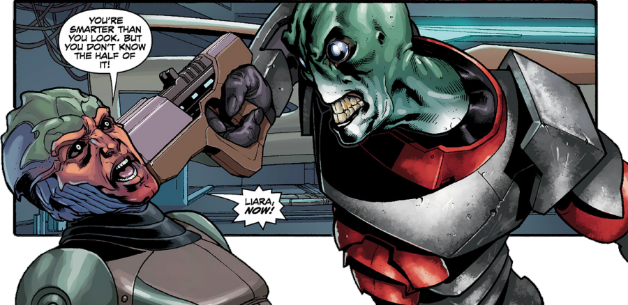
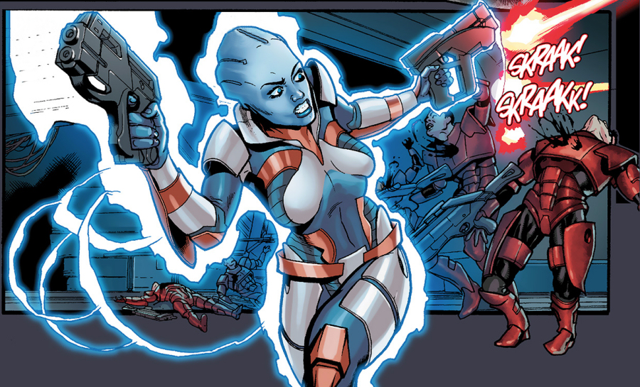

or fans of video games, Mass Effect is a title which does not need an introduction. Since its conception in 2007, the franchise has grown right across the media and apart from the original trilogy of video games (Mass Effect 1-3), now includes the upcoming fourth video game Mass Effect: Andromeda, four novels, several comic book series, a board game, two sets of action figures, one anime film and a possible feature film in the making.
Each of the instalments, regardless of the media used, fits firmly at a particular place in the complex chronology of the Mass Effect universe.
Mass Effect: Redemption is a four-issue comic book mini-series, events of which take place at some time after the events of the first video game and just before the events of the Mass Effect 2.
Written by John Jackson Miller with art by Omar Francia, both experienced industry veterans who have previously worked, amongst other projects, on the Star Wars Expanded Universe comics, its story revolves around Dr. Liara T'Soni, an Asari scientist. At 106 years old, barely an adult by Asari norms, Liara is an expert in the field of Prothean archaeology and has a passion for studying Prothean technology.
Shortly after helping to win the legendary Battle of the Citadel, commander Shepard, hero of the galaxy, disappears in a mysterious attack on his spaceship Normandy. Shepard’s friends, including Liara T'Soni, want answers. But they are not only ones who are searching for Shepard. The investigation takes Liara to Afterlife Club on the space station Omega, where she hires a Drell, known as Feron, to help her find her lost friend. Feron informs Liara that Shepard is dead and that there is an unnatural interest in his remains. Liara later meets the Illusive Man, figurehead of Cerberus, a secretive organization representing the interests of humanity, who wants Shepard’s body back in human hands.
The Collectors, an enigmatic alien race, have hired the Shadow Broker, who in turn hired the Blue Sun mercenaries, to retrieve Shepard's body as well. Liara locates Blue Suns with their peculiar cargo and prepares an ambush, but Feron, who is a double agent working for Shadow Broker, blows their hideout just as she wants to strike and seize Shepard’s body. In the ensuing scuffle, both Liara and Blue Suns fail in their plans, but Shadow Broker has a contingency plan - he sends in Tazzik, a highly skilled Salarian hit-man, who manages to get hold of the body. Liara and Feron are in hot pursuit of the abductor’s spaceship and they manage to catch up with Tazzik just as he is handing over the Shepard's body to Collectors. When everything seems to be lost, Feron, who turns out to be not a double, but triple agent (working neither for Liara nor for Shadow Broker, but in fact for Cerberus), instigates confusion in which Liara manages to fly away with the Shepard's body in Tazzik’s spaceship, but is forced to leave Feron behind and let him face the full wrath of furious Tazzik.
Miller and Francia know their trade and their co-operation with Mass Effect 2 lead writer Mac Walters had undoubtedly a highly positive effect on the development of this comic book. The plot is solid and to the point, the dialogues are witty, the art is of a very high standard and the main characters are instantly recognisable. Mass Effect: Redemption is an essential reading for all fans of the Mass Effect universe.